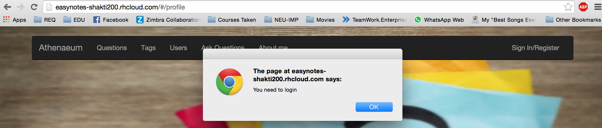

In this experiment I explored the passport authorization. Authorization is the process of giving someone permission to do or have something. In multi-user computer systems, a system administrator defines for the system which users are allowed access to the system and what privileges of use (such as access to which file directories, hours of access, amount of allocated storage space, and so forth). Assuming that someone has logged in to a computer operating system or application, the system or application may want to identify what resources the user can be given during this session. Thus, authorization is sometimes seen as both the preliminary setting up of permissions by a system administrator and the actual checking of the permission values that have been set up when a user is getting access.
Go to my project page and click login.
Go the project link and register yourself. A record will be created for you in the database and you can sign in using your credentials to view the profile page.
I have exposed the /profile service as a get request. So anyone can access the profile page
by requesting the service from browser. Now the aim of the project is to make the profile page available to only logged in users.
This is achieved by the auth service of passport to check authentication.
I have exposed the loggedin service to check if the user is actually logged in or not.
The auth method checks if the request is authenticated or not. That is, if the user is already logged or not.
var auth = function(req, res, next)
{
if (!req.isAuthenticated())
res.send(401);
else
next();
};
app.get('/loggedin', function(req, res){
res.send(req.isAuthenticated() ? req.user : '0');
});
In the client side , on the route of /profile I added a resolve.This makes the route to profile page only if the
resolve function returns a resolved status. Otherwise I have added an alert saying the user to login.
when('/profile', {
templateUrl: 'profile.html',
resolve: {
loggedin: checkLoggedin
}
}).
var checkLoggedin = function($q, $timeout, $http, $location, $rootScope)
{
var deferred = $q.defer();
$http.get('/loggedin').success(function(user)
{
$rootScope.errorMessage = null;
// User is Authenticated
if (user !== '0')
{
$rootScope.currentUser = user;
deferred.resolve();
}
// User is Not Authenticated
else
{
$rootScope.errorMessage = 'You need to log in.';
alert("You need to login");
deferred.reject();
$location.url('/login');
}
});
return deferred.promise;
};
When the user tries to access the profile page without logging in, he gets an alert asking him to login.
